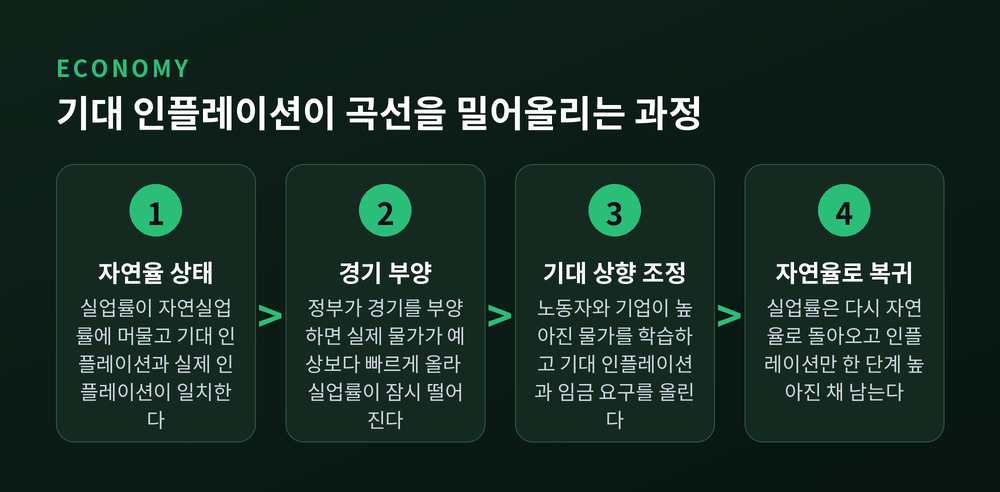
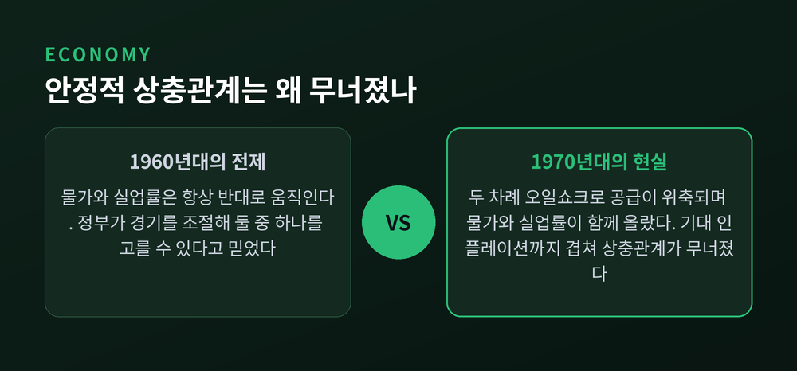
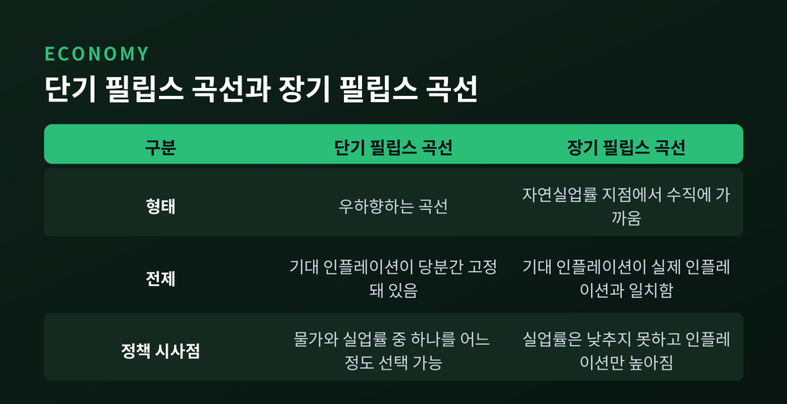
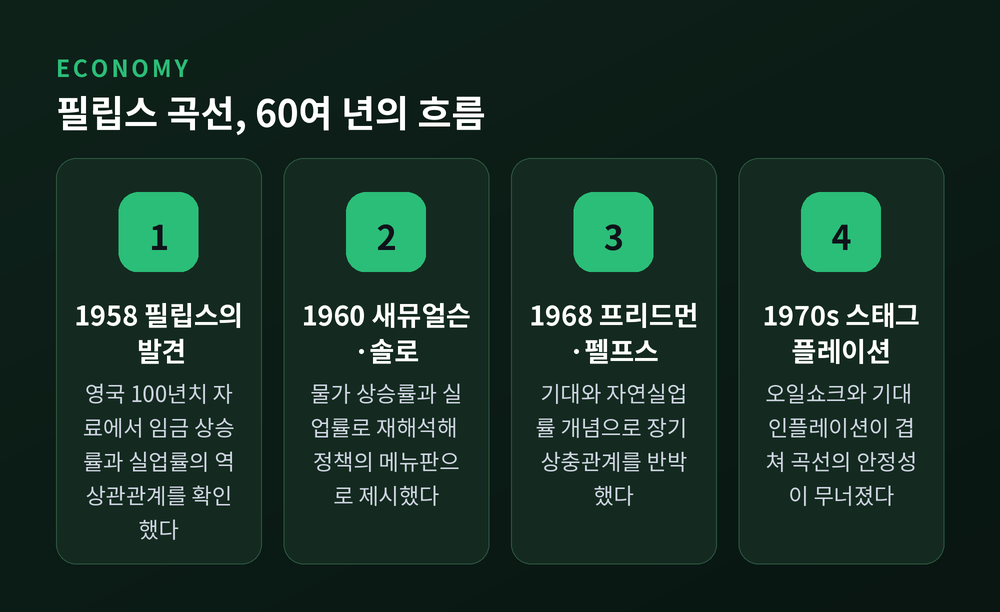

오늘은 필립스 곡선에 대해 이야기해 보려 합니다. 물가와 실업률이 반대로 움직인다는 이 오래된 경제 이론이 어디서 나왔고, 왜 한때 정책의 정답처럼 여겨졌으며, 어떻게 한계에 부딪혔는지 정리해 보겠습니다.
이야기는 1958년으로 거슬러 올라갑니다. 뉴질랜드 출신 경제학자 A. W. 필립스는 학술지 『이코노미카』에 논문 한 편을 실었습니다. 1861년부터 1957년까지, 거의 100년에 이르는 영국의 자료를 들여다본 결과였습니다.
그가 실제로 비교한 것은 실업률과 명목임금 상승률이었습니다. 물가가 아니었습니다. 그런데도 결과는 뚜렷했습니다. 실업률이 낮을 때는 임금이 가파르게 올랐고, 실업률이 높을 때는 임금 상승이 더디거나 거의 멈췄습니다.
실업자가 적다는 것은 기업이 사람을 구하기 어렵다는 뜻입니다. 그러니 더 높은 임금을 제시해서라도 인력을 붙잡아야 합니다. 반대로 실업자가 많으면 기업은 임금을 굳이 올리지 않아도 사람을 구할 수 있습니다. 단순하지만 설득력 있는 논리였습니다.
필립스의 발견을 오늘날 익숙한 형태로 바꾼 것은 다른 두 사람이었습니다. 1960년, 폴 새뮤얼슨과 로버트 솔로가 『아메리칸 이코노믹 리뷰』에 논문을 발표했습니다.
두 사람은 임금 대신 물가 상승률을 실업률과 짝지었습니다. 미국의 1934년부터 1958년까지 자료를 분석한 결과, 여기서도 물가와 실업률은 반대 방향으로 움직였습니다. 이렇게 해서 오늘날 우리가 아는, 세로축에 인플레이션율을 놓고 우하향하는 그래프가 만들어졌습니다.
새뮤얼슨과 솔로는 이 관계를 정책 입안자가 고를 수 있는 "메뉴판(menu of choice)"이라 불렀습니다. 인플레이션을 조금 더 감수하면 실업률을 낮출 수 있고, 실업을 더 감수하면 물가를 안정시킬 수 있다는 뜻입니다.
두 사람은 이 관계가 단기적인 것이며 장기적으로는 달라질 수 있다고 스스로 단서를 달았습니다. 그런데 1960년대의 정책 논의에서 이 단서는 거의 잊혔습니다. 정부는 실업률과 물가 중 하나를 골라 손잡이를 돌리면 된다고 믿기 시작했습니다.
이 믿음에 제동을 건 것은 두 경제학자였습니다. 에드먼드 펠프스는 1967년과 1968년에 잇달아 논문을 내놓았고, 밀턴 프리드먼은 1967년 말 미국경제학회 회장 취임 연설에서 같은 문제를 짚었습니다. 이 연설은 이듬해 「통화정책의 역할」이라는 논문으로 출간되었습니다.
두 사람의 주장은 같은 방향을 가리켰습니다. 필립스 곡선이 보여주는 상충관계는 사람들이 인플레이션을 미처 예상하지 못했을 때만 성립한다는 것이었습니다. 예상하지 못한 물가 상승은 사람을 착각하게 만듭니다. 이 착각이 풀리면 관계도 사라집니다.
여기서 나온 개념이 자연실업률(natural rate of unemployment)입니다. 경기 상황과 무관하게, 노동시장 구조 자체가 만들어내는 실업률 수준이 있다는 뜻입니다. 정부가 통화 확대로 실업률을 이 수준 아래로 억지로 끌어내리면, 그 효과는 일시적일 뿐이라는 것이 두 사람의 결론이었습니다.
이 개념은 훗날 조금 다른 이름으로도 불리게 됩니다. 1975년 프랑코 모딜리아니와 루카스 파파데모스는 '물가상승이 없는 실업률'이라는 뜻의 NIRU를 제안했습니다. 이후 '비가속 인플레이션 실업률', 즉 오늘날의 NAIRU로 다듬어졌습니다. 이 수준 아래로 실업률이 내려가면 인플레이션이 가속되기 시작한다는 뜻입니다. 이름은 달라도 뿌리는 프리드먼-펠프스의 자연실업률과 같습니다.

프리드먼과 펠프스의 논리를 단계로 풀면 이렇습니다. 처음에는 실업률이 자연율 수준에 머물러 있고, 실제 인플레이션과 예상 인플레이션이 일치합니다.
정부가 경기를 부양하면 실제 물가가 예상보다 빠르게 오릅니다. 노동자는 이를 곧바로 알아채지 못합니다. 실질임금이 낮아진 셈이니 기업은 고용을 늘리고, 실업률은 잠시 떨어집니다.
그런데 시간이 지나면 노동자와 기업 모두 높아진 물가를 학습합니다. 예상 인플레이션을 위로 조정하고, 임금 요구도 따라 올립니다. 그러면 실업률은 다시 자연율로 돌아옵니다. 남는 것은 더 높아진 물가뿐입니다.
정부가 이 과정을 반복하면 어떻게 될까요. 실업률은 매번 제자리로 돌아오고, 인플레이션만 계단을 오르듯 계속 높아집니다. 실업률을 낮추려던 시도가 결국 물가만 밀어 올리는 셈입니다.

이론이 예견한 균열은 실제로 찾아왔습니다. 1970년대, 세계 경제는 처음 겪는 조합을 마주합니다. 물가도 오르고 실업률도 함께 오르는, 이른바 스태그플레이션(stagflation)이었습니다. 우하향 곡선만 알고 있던 사람들에게는 낯선 풍경이었습니다.
계기는 두 번의 오일쇼크였습니다. 1973년, 아랍석유수출국기구가 원유 금수 조치를 발표하며 유가가 치솟았습니다. 미국 경제는 1973년부터 1975년까지 깊은 침체에 빠졌습니다. 1978년에는 이란 혁명의 여파로 세계 원유 생산이 크게 줄었고, 1979년과 1980년 사이 유가는 다시 두 배로 뛰었습니다.
오일쇼크 같은 공급 충격은 필립스 곡선이 원래 전제하지 않았던 변수였습니다. 기존 곡선은 수요가 늘면 물가도 오르고 고용도 는다는 그림을 전제로 했습니다. 그런데 공급이 줄어 물가가 오르는 상황에서는 생산과 고용이 함께 위축됩니다. 물가와 실업률이 같은 방향으로 움직이는 것입니다.
여기에 프리드먼과 펠프스가 짚었던 기대 인플레이션의 상승이 겹쳤습니다. 높은 물가가 오래 이어지자 사람들은 앞으로도 물가가 계속 오를 것이라 예상하기 시작했습니다. 이 기대가 임금과 가격에 그대로 반영되면서, 인플레이션은 실업률과 무관하게 스스로 굳어졌습니다. 예전엔 실업률만 잡으면 물가도 따라 움직인다고 믿었습니다. 지금은 공급 충격과 기대라는 별개의 힘이 곡선 자체를 밀어 올릴 수 있다는 사실이 분명해졌습니다.

여기서 균형 잡힌 시각이 필요합니다. 필립스 곡선이 통째로 틀렸다고 보기는 어렵습니다.
단기적으로는 여전히 상충관계가 관찰됩니다. 경기가 과열되면 물가가 오르고, 경기가 식으면 실업률이 오르는 흐름은 지금도 유효합니다. 다만 그 관계는 프리드먼-펠프스가 말한 대로 사람들의 기대 수준에 따라 위아래로 이동합니다.
장기적으로는 다릅니다. 기대 인플레이션이 실제 인플레이션과 완전히 일치하도록 조정되고 나면, 실업률은 통화정책과 무관하게 자연실업률로 되돌아간다는 것이 자연율 가설의 결론입니다. 그래서 장기 필립스 곡선은 자연실업률 지점에서 수직에 가깝다고 설명됩니다.
물론 최근 연구에서는 이 수직선이 정말 완전한 직선인지에 대해 이견도 있습니다. 완만한 곡선에 가깝다는 실증 분석도 나옵니다. 아직 완전히 정리된 논쟁은 아닙니다.

정리하면 이렇습니다. 필립스 곡선은 처음엔 임금과 실업률의 관찰이었고, 이후 물가와 실업률의 정책 메뉴판이 되었습니다. 그러다 기대라는 변수를 만나며 "공짜 점심은 없다"는 사실을 증명하는 이야기로 바뀌었습니다.
물가를 잡으려는 시도는 실업률을 잠시만 움직일 뿐, 결국 남는 것은 사람들의 달라진 기대다.
지금도 중앙은행이 금리를 올리고 내릴 때마다 이 오래된 곡선의 그림자가 어른거립니다. 필립스 곡선이 여전히 쓸모 있냐고 물으신다면, 절반은 맞고 절반은 틀렸다고 답하겠습니다.